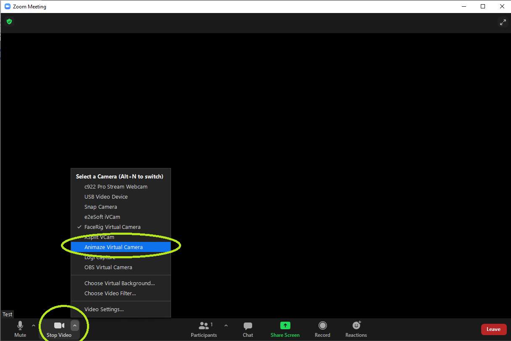
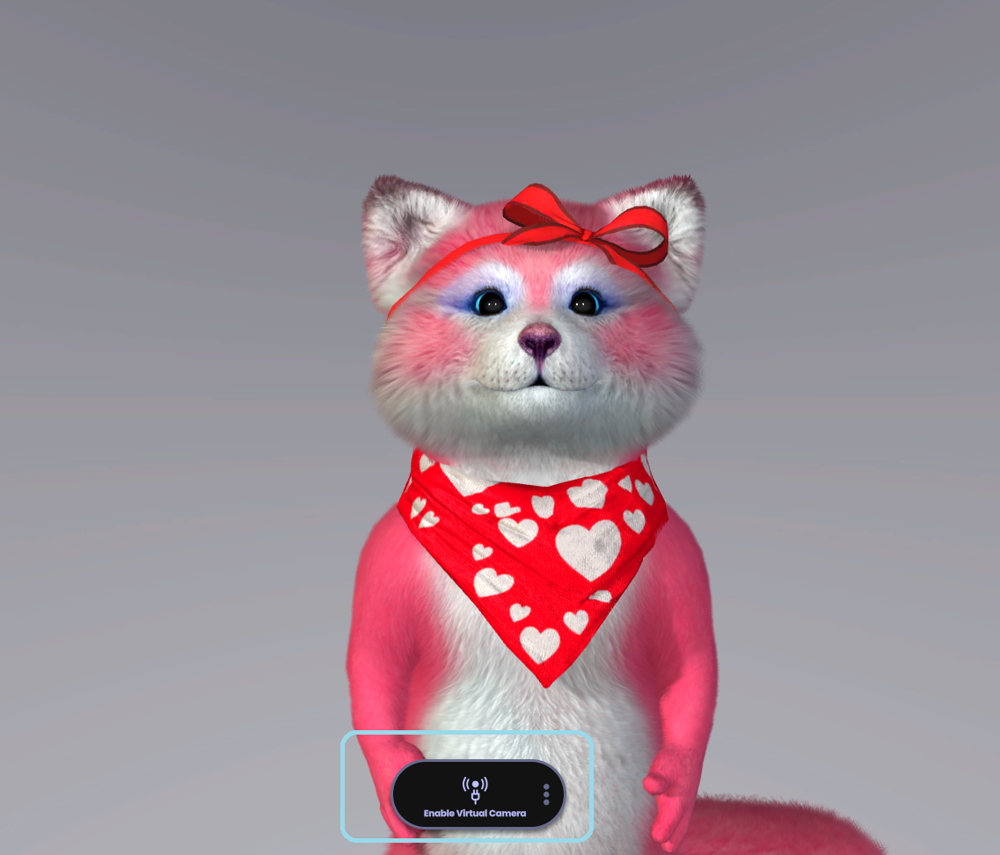

Animaze Desktop: How do I video call on Zoom using Animaze?
If you’re looking to spice up your work from home conferences or casual hangouts with friends and family over Zoom, you can use one of Animaze’s avatars! Here are the simple steps to do so:
In the Zoom Meeting window, choose the Animaze Virtual Camera from your video’s settings

Once this is done, go into the Animaze app and hit the Enable Virtual Camera button in order to connect Animaze to Zoom meetings!

Now just join your video chat and have fun with your favorite avatars!
For a better experience, make sure you calibrate your avatar properly. More information on how to do that is available here.